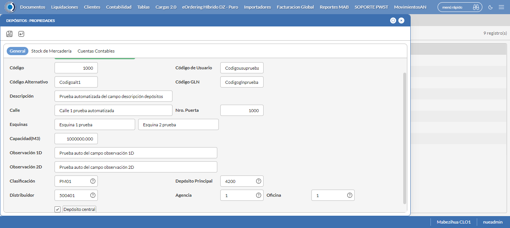

Desarrollado por : Area de Testing PWST
Fecha y hora de inicio : 2022-07-11 14:56:44
Duracion : 0:08:41.851768
Resultado : Total 9，Correctos 9 ，Taza de resultado 100.00%
Resumen 100.00% Errores 0 Fallidos 0 Correctos 9 Test realizados 9
| Caso de Prueba | Total | Correctos | Fallido | Error | Detalles | Captura del error |
| Depositos.Test: Escenario 1 de Depositos | 9 | 9 | 0 | 0 | Detalles | |
test |
pt1_1: 2022-07-11 14:56:46,313 - root - INFO - Se abre el chrome
2022-07-11 14:56:51,353 - root - INFO - Entra a la URL
2022-07-11 14:56:51,481 - root - INFO - Maximiza la pantalla
2022-07-11 14:56:54,539 - root - INFO - Cambia al frame
|
|
||||
test_000: Ingresa a la base de datos |
pt1_2: 2022-07-11 14:56:57,640 - root - INFO - Escribe el usuario
2022-07-11 14:56:57,753 - root - INFO - Escribe la contraseña
2022-07-11 14:56:57,892 - root - INFO - Se dio clic en el boton ingresar
2022-07-11 14:57:01,461 - root - INFO - Ejecutar Enterprise
2022-07-11 14:57:01,462 - root - INFO - Captura: C:\xampp\htdocs\versiones\automatizaciones\AutoPWST\01DEP\report\img screen：20220711_14_57_01.png
2022-07-11 14:57:05,669 - root - INFO - Cambia entre pestañas
|
|||||
test_001: Cerrar Error de inicio |
pt1_3: 2022-07-11 14:57:28,467 - root - INFO - Se presiona el boton 'Cerrar Error', para crear un nuevo registro igual al anterior.
|
|
||||
test_002: Abre menu y ejecuta pantalla |
pt1_4: 2022-07-11 14:57:31,585 - root - INFO - Abre el menu completo
2022-07-11 14:57:44,575 - root - INFO - Abre la pantalla de Depositos
2022-07-11 14:57:44,652 - root - INFO - La pantalla ejecutada es Clasifiación de Deposito
2022-07-11 14:57:44,652 - root - INFO - Captura: C:\xampp\htdocs\versiones\automatizaciones\AutoPWST\01DEP\report\img screen：20220711_14_57_44.png
2022-07-11 14:57:44,833 - root - INFO - Se presiona el boton 'Nuevo', para crear un nuevo registro.
|

|
||||
test_003: Abre la ventana de nuevo y crear un registro |
pt1_5: 2022-07-11 14:57:45,921 - root - INFO - Se abrio la pantalla para el ingreso de un registro nuevo.
2022-07-11 14:57:45,958 - root - INFO - El campo 'Codigo' si se encuentra visible.
2022-07-11 14:57:45,995 - root - INFO - El campo 'Codigo Usuario' si se encuentra visible.
2022-07-11 14:57:46,034 - root - INFO - El campo 'Codigo Alternativo' si se encuentra visible.
2022-07-11 14:57:46,074 - root - INFO - El campo 'Codigo GLN' si se encuentra visible.
2022-07-11 14:57:46,114 - root - INFO - El campo 'Descrición' si se encuentra visible.
2022-07-11 14:57:48,194 - root - INFO - El campo 'Calle' si se encuentra visible.
2022-07-11 14:57:48,235 - root - INFO - El campo 'Nro. Puerta' si se encuentra visible.
2022-07-11 14:57:48,273 - root - INFO - El campo 'Esquinas' si se encuentra visible.
2022-07-11 14:57:48,311 - root - INFO - El campo 'Capacidad(M3)' si se encuentra visible.
2022-07-11 14:57:48,360 - root - INFO - El campo 'Observación 1D' si se encuentra visible.
2022-07-11 14:57:48,400 - root - INFO - El campo 'Observación 2D' si se encuentra visible.
2022-07-11 14:57:48,437 - root - INFO - El campo 'Clasificación' si se encuentra visible.
2022-07-11 14:57:48,476 - root - INFO - El campo 'Distribuidor' si se encuentra visible.
2022-07-11 14:57:48,515 - root - INFO - El campo 'Depósito Principal' si se encuentra visible.
2022-07-11 14:57:48,555 - root - INFO - El campo 'Agencia' si se encuentra visible.
2022-07-11 14:57:48,593 - root - INFO - El campo 'Oficina' si se encuentra visible.
2022-07-11 14:57:48,631 - root - INFO - El campo 'Depósito central' si se encuentra visible.
2022-07-11 14:57:48,723 - root - INFO - Ingresa el codigo del nuevo registro
2022-07-11 14:57:51,889 - root - INFO - Ingresa el codigo usuario del nuevo registro
2022-07-11 14:57:55,007 - root - INFO - Ingresa el codigo alternativo del nuevo registro
2022-07-11 14:57:58,176 - root - INFO - Ingresa el codigo GLN del nuevo registro
2022-07-11 14:58:01,396 - root - INFO - Ingresa la descripción del nuevo registro
2022-07-11 14:58:04,553 - root - INFO - Ingresa la calle del nuevo registro
2022-07-11 14:58:07,693 - root - INFO - Ingresa el Num de la puerta del nuevo registro
2022-07-11 14:58:10,867 - root - INFO - Ingresa la esquina 1 del nuevo registro
2022-07-11 14:58:14,051 - root - INFO - Ingresa la esquina 2 del nuevo registro
2022-07-11 14:58:17,157 - root - INFO - Ingresa la Capacidad M3 del nuevo registro
2022-07-11 14:58:20,340 - root - INFO - Ingresa la observacion 1D del nuevo registro
2022-07-11 14:58:23,515 - root - INFO - Ingresa la Observacion 2D del nuevo registro
2022-07-11 14:59:08,900 - root - INFO - Captura: C:\xampp\htdocs\versiones\automatizaciones\AutoPWST\01DEP\report\img screen：20220711_14_59_08.png
2022-07-11 14:59:09,142 - root - INFO - Se hace el cambio de pestaña para continuar con el registro nuevo
2022-07-11 14:59:12,257 - root - INFO - Se presiona el boton 'Nuevo', para crear un nuevo registro.
2022-07-11 14:59:13,383 - root - INFO - El campo 'Artículo' si se encuentra visible.
2022-07-11 14:59:13,425 - root - INFO - El campo 'Stock Mínimo' si se encuentra visible.
2022-07-11 14:59:13,464 - root - INFO - El campo 'Stock Deseado' si se encuentra visible.
2022-07-11 14:59:29,778 - root - INFO - Ingresa el Stock Minimo del nuevo registro
2022-07-11 14:59:32,944 - root - INFO - Ingresa el Stock Deseado del nuevo registro
2022-07-11 14:59:36,069 - root - INFO - Se presiona el boton 'Guardar', para guardar el registro.
2022-07-11 14:59:40,247 - root - INFO - Se hace el cambio de pestaña para continuar con el registro nuevo
2022-07-11 14:59:43,333 - root - INFO - Se presiona el boton 'Nuevo', para crear un nuevo registro.
2022-07-11 14:59:43,395 - root - INFO - El campo 'Tipo Documento' si se encuentra visible.
2022-07-11 14:59:43,436 - root - INFO - El campo 'Cuenta Contable' si se encuentra visible.
2022-07-11 14:59:43,476 - root - INFO - El campo 'Centro Costo' si se encuentra visible.
2022-07-11 15:00:07,813 - root - INFO - Se presiona el boton 'Aceptar', para guardar el registro.
2022-07-11 15:00:12,932 - root - INFO - Se da clic en el boton Guardar; se debe crear un nuevo registro.
|
 | ||||
test_004: Repetir el registro creado anteriormente |
pt1_6: 2022-07-11 15:00:16,057 - root - INFO - Se presiona el boton 'Refrescar', para crear un nuevo registro igual al anterior.
2022-07-11 15:00:19,197 - root - INFO - Se presiona el boton 'Nuevo', para crear un nuevo registro igual al anterior.
2022-07-11 15:00:20,303 - root - INFO - Se abrio la pantalla para el ingreso de un registro nuevo.
2022-07-11 15:00:20,341 - root - INFO - El campo 'Codigo' si se encuentra visible.
2022-07-11 15:00:20,383 - root - INFO - El campo 'Codigo Usuario' si se encuentra visible.
2022-07-11 15:00:20,422 - root - INFO - El campo 'Codigo Alternativo' si se encuentra visible.
2022-07-11 15:00:20,460 - root - INFO - El campo 'Codigo GLN' si se encuentra visible.
2022-07-11 15:00:20,512 - root - INFO - El campo 'Descrición' si se encuentra visible.
2022-07-11 15:00:20,557 - root - INFO - El campo 'Calle' si se encuentra visible.
2022-07-11 15:00:20,598 - root - INFO - El campo 'Nro. Puerta' si se encuentra visible.
2022-07-11 15:00:20,639 - root - INFO - El campo 'Esquinas' si se encuentra visible.
2022-07-11 15:00:20,680 - root - INFO - El campo 'Capacidad(M3)' si se encuentra visible.
2022-07-11 15:00:20,720 - root - INFO - El campo 'Observación 1D' si se encuentra visible.
2022-07-11 15:00:20,760 - root - INFO - El campo 'Observación 2D' si se encuentra visible.
2022-07-11 15:00:20,798 - root - INFO - El campo 'Clasificación' si se encuentra visible.
2022-07-11 15:00:20,836 - root - INFO - El campo 'Distribuidor' si se encuentra visible.
2022-07-11 15:00:20,874 - root - INFO - El campo 'Depósito Principal' si se encuentra visible.
2022-07-11 15:00:20,915 - root - INFO - El campo 'Agencia' si se encuentra visible.
2022-07-11 15:00:20,970 - root - INFO - El campo 'Oficina' si se encuentra visible.
2022-07-11 15:00:21,014 - root - INFO - El campo 'Depósito central' si se encuentra visible.
2022-07-11 15:00:21,103 - root - INFO - Ingresa el codigo del nuevo registro
2022-07-11 15:00:24,259 - root - INFO - Ingresa el codigo usuario del nuevo registro
2022-07-11 15:00:27,407 - root - INFO - Ingresa el codigo alternativo del nuevo registro
2022-07-11 15:00:30,542 - root - INFO - Ingresa el codigo GLN del nuevo registro
2022-07-11 15:00:33,766 - root - INFO - Ingresa la descripción del nuevo registro
2022-07-11 15:00:36,938 - root - INFO - Ingresa la calle del nuevo registro
2022-07-11 15:00:40,084 - root - INFO - Ingresa el Num de la puerta del nuevo registro
2022-07-11 15:00:43,288 - root - INFO - Ingresa la esquina 1 del nuevo registro
2022-07-11 15:00:46,410 - root - INFO - Ingresa la esquina 2 del nuevo registro
2022-07-11 15:00:49,559 - root - INFO - Ingresa la Capacidad M3 del nuevo registro
2022-07-11 15:00:52,710 - root - INFO - Ingresa la observacion 1D del nuevo registro
2022-07-11 15:00:55,910 - root - INFO - Ingresa la Observacion 2D del nuevo registro
2022-07-11 15:01:41,116 - root - INFO - Se da clic en el boton Guardar; se debe crear un nuevo registro.
2022-07-11 15:01:44,130 - root - INFO - Captura: C:\xampp\htdocs\versiones\automatizaciones\AutoPWST\01DEP\report\img screen：20220711_15_01_44.png
2022-07-11 15:01:44,364 - root - INFO - Se presiona el boton 'Cerrar', para cerrar el mensaje de duplicidad de llave primaria
2022-07-11 15:01:46,515 - root - INFO - Se presiona el boton 'Cerrar', para cerrar la ventana
|
|||||
test_005: Modificar el registro |
pt1_7: 2022-07-11 15:01:50,620 - root - INFO - Se presiona el boton 'Refrescar', para crear un nuevo registro igual al anterior.
2022-07-11 15:01:58,299 - root - INFO - Se da clic en el registro creado, para proceder a modificarlo.
2022-07-11 15:01:58,490 - root - INFO - Ingresa el codigo usuario del nuevo registro
2022-07-11 15:02:01,647 - root - INFO - Ingresa el codigo alternativo del nuevo registro
2022-07-11 15:02:04,920 - root - INFO - Ingresa el codigo GLN del nuevo registro
2022-07-11 15:02:08,191 - root - INFO - Ingresa la descripción del nuevo registro
2022-07-11 15:02:11,421 - root - INFO - Ingresa la calle del nuevo registro
2022-07-11 15:02:14,574 - root - INFO - Ingresa el Num de la puerta del nuevo registro
2022-07-11 15:02:17,796 - root - INFO - Ingresa la esquina 1 del nuevo registro
2022-07-11 15:02:20,998 - root - INFO - Ingresa la esquina 2 del nuevo registro
2022-07-11 15:02:24,160 - root - INFO - Ingresa la Capacidad M3 del nuevo registro
2022-07-11 15:02:27,388 - root - INFO - Ingresa la observacion 1D del nuevo registro
2022-07-11 15:02:30,661 - root - INFO - Ingresa la Observacion 2D del nuevo registro
2022-07-11 15:03:15,634 - root - INFO - Captura: C:\xampp\htdocs\versiones\automatizaciones\AutoPWST\01DEP\report\img screen：20220711_15_03_15.png
2022-07-11 15:03:15,883 - root - INFO - Se hace el cambio de pestaña para continuar con el registro nuevo
2022-07-11 15:03:23,556 - root - INFO - Se da clic en el registro creado, para proceder a modificarlo.
2022-07-11 15:03:42,986 - root - INFO - Ingresa el Stock Minimo del nuevo registro
2022-07-11 15:03:46,151 - root - INFO - Ingresa el Stock Deseado del nuevo registro
2022-07-11 15:03:49,294 - root - INFO - Se presiona el boton 'Guardar', para guardar el registro.
2022-07-11 15:03:53,419 - root - INFO - Se hace el cambio de pestaña para continuar con el registro nuevo
2022-07-11 15:04:03,053 - root - INFO - Se da clic en el registro creado, para proceder a modificarlo.
2022-07-11 15:04:29,906 - root - INFO - Se presiona el boton 'Aceptar', para guardar el registro.
2022-07-11 15:04:34,032 - root - INFO - Se da clic en el boton Guardar; se debe modificar la informacion del registro.
|
|||||
test_006: Eliminar el registro creado |
pt1_8: 2022-07-11 15:04:37,145 - root - INFO - Se presiona el boton 'Refrescar', para proceder a eliminar el registro.
2022-07-11 15:04:44,797 - root - INFO - Se da clic en el registro creado, para proceder a eliminarlo.
2022-07-11 15:04:44,899 - root - INFO - Se hace el cambio de pestaña para continuar con el registro nuevo
2022-07-11 15:04:52,516 - root - INFO - Se da clic en el registro creado, para proceder a modificarlo.
2022-07-11 15:04:58,653 - root - INFO - Se presiona el boton 'Eliminar', para eliminar el registro.
2022-07-11 15:04:58,750 - root - INFO - Se da clic en el boton Guardar; se debe modificar la informacion del registro.
2022-07-11 15:05:06,369 - root - INFO - Se da clic en el registro creado, para proceder a eliminarlo.
2022-07-11 15:05:09,519 - root - INFO - Se presiona el boton 'Eliminar', para eliminar el registro.
2022-07-11 15:05:09,521 - root - INFO - Captura: C:\xampp\htdocs\versiones\automatizaciones\AutoPWST\01DEP\report\img screen：20220711_15_05_09.png
2022-07-11 15:05:09,770 - root - INFO - Se confirma el eliminado del registro
2022-07-11 15:05:20,333 - root - INFO - Se presiona el boton 'Refrescar', para crear un nuevo registro igual al anterior.
2022-07-11 15:05:22,444 - root - INFO - Se presiona el boton 'Cerrar', para cerrar la pantalla de Categorias Fiscales.
|
|||||
test_007: Cerrar_Navegador |
pt1_9: 2022-07-11 15:05:26,783 - root - INFO - Se cierra chrome
|
|
||||
| Caso de prueba | 9 | 9 | 0 | 0 | Taza de resultado：100.00% | |